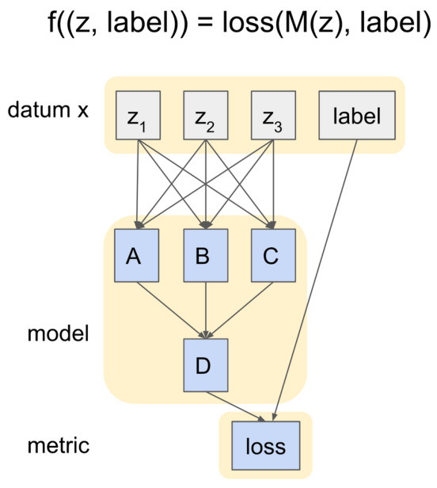
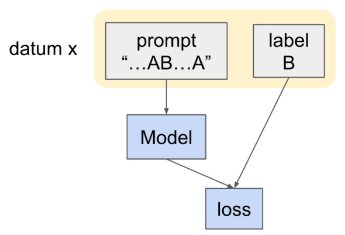
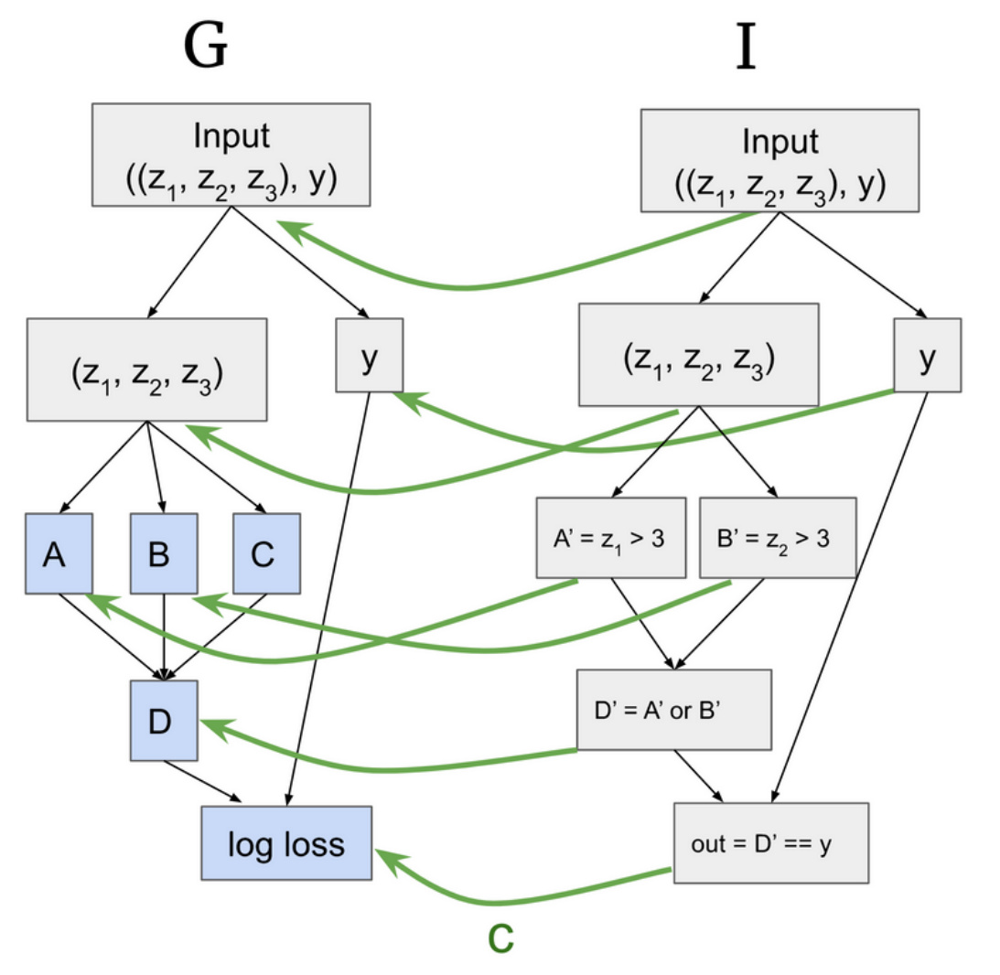
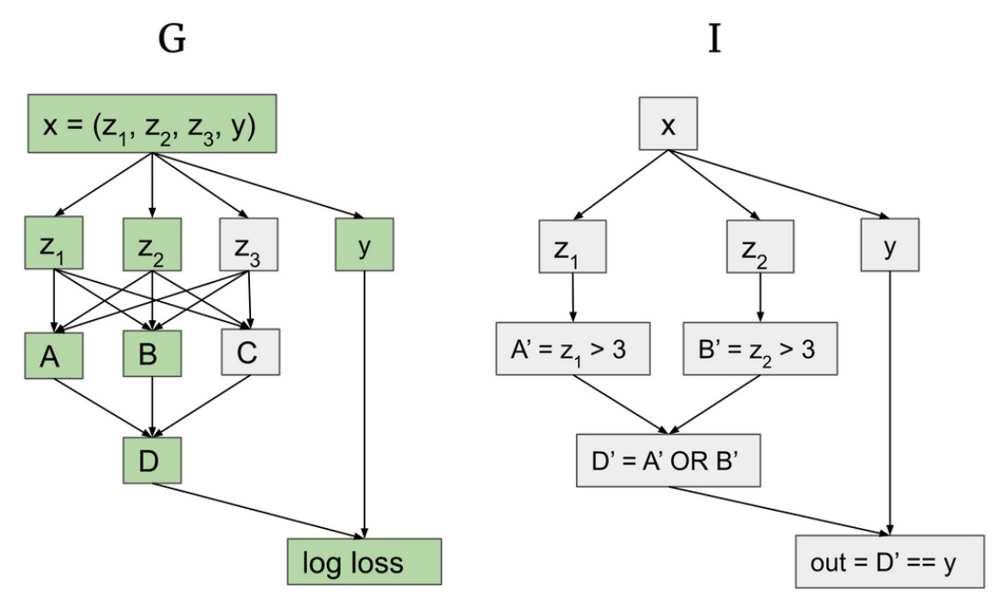
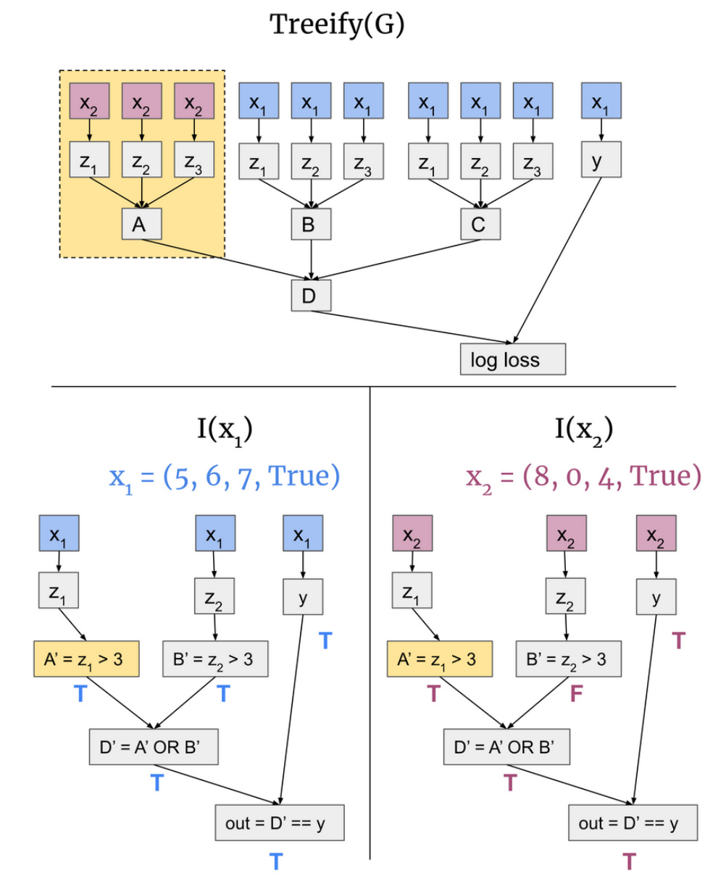
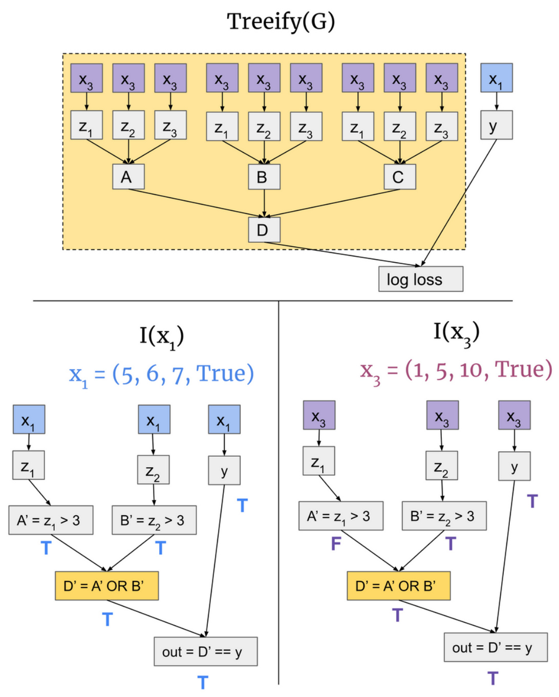
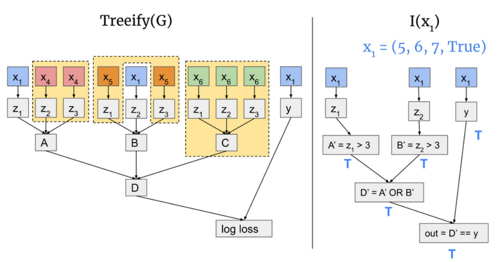
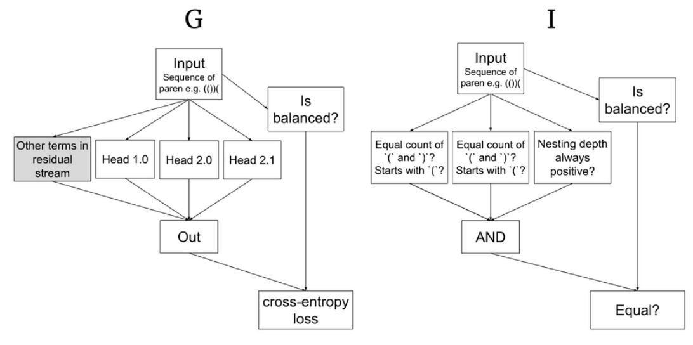
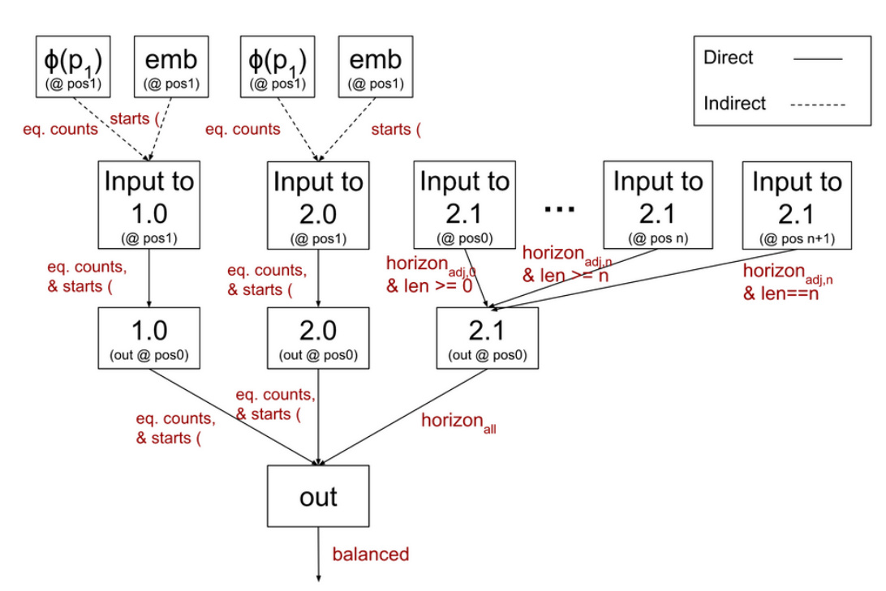

Causal Scrubbing: a method for rigorously testing interpretability hypotheses [Redwood Research]
by LawrenceC, Adri à Garriga-alonso, Nicholas Goldowsky-Dill, ryan _ greenblatt, jenny, Ansh Radhakrishnan, Buck, Nate Thomas
2nd Dec 2022
* Authors sorted alphabetically.
Summary: This post introduces causal scrubbing, a principled approach for evaluating the quality of mechanistic interpretations. The key idea behind causal scrubbing is to test interpretability hypotheses via behavior-preserving resampling ablations . We apply this method to develop a refined understanding of how a small language model implements induction and how an algorithmic model correctly classifies if a sequence of parentheses is balanced.
1 Introduction
A question that all mechanistic interpretability work must answer is, “how well does this interpretation explain the phenomenon being studied?”. In the many recent papers in mechanistic interpretability, researchers have generally relied on ad-hoc methods to evaluate the quality of interpretations.[1]
This ad hoc nature of existing evaluation methods poses a serious challenge for scaling up mechanistic interpretability. Currently, to evaluate the quality of a particular research result, we need to deeply understand both the interpretation and the phenomenon being explained, and then apply researcher judgment. Ideally, we’d like to find the interpretability equivalent of property-based testing—automatically checking the correctness of interpretations, instead of relying on grit and researcher judgment. More systematic procedures would also help us scale-up interpretability efforts to larger models, behaviors with subtler effects, and to larger teams of researchers. To help with these efforts, we want a procedure that is both powerful enough to finely distinguish better interpretations from worse ones, and general enough to be applied to complex interpretations.
In this work, we propose causal scrubbing , a systematic ablation method for testing precisely stated hypotheses about how a particular neural network[2] implements a behavior on a dataset. Specifically, given an informal hypothesis about which parts of a model implement the intermediate calculations required for a behavior, we convert this to a formal correspondence between a computational graph for the model and a human-interpretable computational graph. Then, causal scrubbing starts from the output and recursively finds all of the invariances of parts of the neural network that are implied by the hypothesis, and then replaces the activations of the neural network with the maximum entropy [3] distribution subject to certain natural constraints implied by the hypothesis
and the data distribution. We then measure how well the scrubbed model implements the specific behavior. [4] Insofar as the hypothesis explains the behavior on the dataset, the model’s performance should be unchanged.
Unlike previous approaches that were specific to particular applications, causal scrubbing aims to work on a large class of interpretability hypotheses, including almost all hypotheses interpretability researchers propose in practice (that we’re aware of). Because the tests proposed by causal scrubbing are mechanically derived from the proposed hypothesis, causal scrubbing can be incorporated “in the inner loop” of interpretability research. For example, starting from a hypothesis that makes very broad claims about how the model works and thus is consistent with the model’s behavior on the data, we can iteratively make hypotheses that make more specific claims while monitoring how well the new hypotheses explain model behavior. We demonstrate two applications of this approach in later posts: first on a parenthesis balancer checker, then on the induction heads in a two-layer attention-only language model.
We see our contributions as the following:
-
We formalize a notion of interpretability hypotheses that can represent a large, natural class of mechanistic interpretations;
-
We propose an algorithm, causal scrubbing , that tests hypotheses by systematically replacing activations in all ways that the hypothesis implies should not affect performance.
-
We demonstrate the practical value of this approach by using it to investigate two interpretability hypotheses for small transformers trained in different domains.
This is the main post in a four post sequence, and covers the most important content:
What is causal scrubbing? Why do we think it’s more principled than other methods? (sections 2-4)
A summary of our results from applying causal scrubbing (section 5)
Discussion: Applications, Limitations, Future work (sections 6 and 7).
In addition, there are three posts with information of less general interest. The first is a series of appendices to the content of this post. Then, a pair of posts covers the details of what we discovered applying causal scrubbing to a paren-balance checker and induction in a small language model .[5] They are collected in a sequence here .
1.1 Related work
Ablations for Model Interpretability: One commonly used technique in mechanistic interpretability is the “ablate, then measure” approach. Specifically, for interpretations that aim to explain why the model achieves low loss, it’s standard to remove parts that the interpretation identifies as important and check that model performance suffers, or to remove unimportant parts and check that model performance is unaffected. For example, in Nanda and Lieberum’s Grokking work, to verify the claim that the model uses certain key frequencies to compute the correct answer to modular addition questions, the authors confirm that zero ablating the key frequencies greatly increases loss, while zero ablating random other frequencies has no effect on loss. In Anthropic’s Induction Head paper, they remove the induction heads and observe that this reduces the ability of
models to perform in-context learning. In the IOI mechanistic interpretability project, the authors define the behavior of a transformer subcircuit by mean-ablating everything except the nodes from the circuit. This is used to formulate criteria for validating that the proposed circuit preserves the behavior they investigate and includes all the redundant nodes performing a similar role.
Causal scrubbing can be thought of as a generalized form of the “ablate, then measure” methodology.[6] However, unlike the standard zero and mean ablations, we ablate modules by resampling activations from other inputs (which we’ll justify in the next post). In this work, we also apply causal scrubbing to more precisely measure different mechanisms of induction head behavior than in the Anthropic paper.
Causal Tracing: Like causal tracing, causal scrubbing identifies computations by patching activations. However, causal tracing aims to identify a specific path (“trace”) that contributes causally to a particular behavior by corrupting all nodes in the neural network with noise and then iteratively denoising nodes. In contrast, causal scrubbing tries to solve a different problem: systematically testing hypotheses about the behavior of a whole network by removing (“scrubbing away”) every causal relationship that should not matter according to the hypothesis being evaluated. In addition, causal tracing patches with (homoscedastic) Gaussian noise and not with the activations of other samples. Not only does this take your model off distribution, it might have no effect in cases where the scale of the activation is much larger than the scale of the noise.
Heuristic explanations: This work takes a perspective on interpretability that is strongly influenced by ARC’s work on “heuristic explanations” of model behavior. In particular, causal scrubbing can be thought of as a form of defeasible reasoning: unlike mathematical proofs (where if you have a proof for a proposition P, you’ll never see a better proof for the negation of P that causes you to overall believe P is false), we expect that in the context of interpretability, we need to accept arguments that might be overturned by future arguments.
2 Setup
We assume a dataset D over a domain X and a function f : X → R which captures a behavior of interest. We will then explain the expectation of this function on our dataset, Ex∼D[f(x)] .
This allows us to explain behaviors of the form “a particular model M gets low loss on a distribution D .” To represent this we include the labels in D and both the model and a loss function in f :

We also want to explain behaviors such as “if the prompt contains some bigram AB and ends with the token A , then the model is likely to predict B follows next.” We can do this by choosing a dataset D where each datum has the prompt ...AB...A and expected completion B . For instance:

We then propose a hypothesis about how this behavior is implemented. Formally, a hypothesis h = (G, I, c) for f is a tuple of three things:
-
A computational graph G [7], which implements the function f
-
We require G to be extensionally equal to f (equal on all of X )
-
A computational graph I , intuitively an ‘interpretation’ of the model.
-
A correspondence function c from the nodes of I to the nodes of G .
We require c to be an injective graph homomorphism: that is, if there is an edge (u, v) in I then the edge (c(u), c(v)) must exist in G .
We additionally require I and G to each have a single input and output node, where c maps input to input and output to output. All input nodes are of type X which allows us to evaluate both G and I on all of X .
Here is an example hypothesis:

In this figure, we hypothesize that G works by having A compute whether z1 > 3 , B compute whether z2 > 3 , and then ORing those values. Then we’re asserting that the behavior is explained by the relationship between D and the true label y .
A couple of important things to notice:
-
We will often rewrite the computational graph of the original model implementation into a more convenient form (for instance splitting up a sum into terms, or grouping together several computations into one).
-
You can think of I as a heuristic[8] that the hypothesis claims that the model uses to achieve the behavior. It’s possible that the heuristic is imperfect and will sometimes disagree with the label y . In that case our hypothesis would claim that the model should be incorrect on these inputs.
-
Note that the mapping c doesn’t tell you how to translate a value of I into an activation, only which nodes correspond.
-
We will call c(I) the “important nodes” of G .[9]
-
Let nI , nG be nodes in I and G respectively such that c(nI) = nG .
-
Intuitively this is a claim that when we evaluate both G and I on the same input, then the value of nG (usually an activation of the model) ‘represents’ the value of nI (usually a simple feature of the input).
-
The causal scrubbing algorithm will test a weaker claim: that the equivalence classes on inputs to nI are the same as the equivalence classes on inputs to nG . We think this is sufficient to meaningfully test the mechanistic interpretability hypotheses we are interested in, although it is not strong enough to eliminate all incorrect hypotheses.
-
-
-
Among other things, the hypothesis claims that nodes of G that are not mapped to by c are unimportant for the behavior under investigation.[10]
Hypotheses are covered in more detail in the appendix .
3 Causal Scrubbing
In this section we provide two different explanations of causal scrubbing:
-
An informal description of the activation-replacements that a hypothesis implies are valid. We try to provide a helpful introduction to the core idea of causal scrubbing via many diagrams; and
-
The causal scrubbing algorithm and pseudocode
Different readers of this document have found different explanations to be helpful, so we encourage you to skip around or skim some sections.
Our goal will be to define a metric Escrubbed(h, D) by recursively sampling activations that should be equivalent according to each node of the interpretation I . We then compare this value to Ed∼D[f(d)] . If a hypothesis is (reasonably) accurate, then the activation replacements we perform should not alter the loss and so we’d have Escrubbed(h, D) ≈ Ed∈Df(d) . Overall, we think that this difference will be a reasonable proxy for the faithfulness of the hypothesis—that is, how accurately the hypothesis corresponds to the “real reasons” behind the model behavior.[11]
3.1 An informal description: What activation replacements does a hypothesis imply are valid?
Consider a hypothesis h = (G, I, c) on the graphs below, where c maps to the corresponding nodes of G highlighted in green:

This hypothesis claims that the activations A and B respectively represent checking whether the first and second component of the input is greater than 3. Then the activation D represents checking whether either of these conditions were true. Both the third component of the input and the activation of C are unimportant (at least for the behavior we are explaining, the log loss with respect to the label y ).
If this hypothesis is true, we should be able to perform two types of ‘resampling ablations’:
-
replacing the activations of A, B, and D with the activations on other inputs that are “equivalent” under I ; and
-
replacing the activations that are claimed to be unimportant for a particular path (such as C or z1 into B) with their activation on any other input.
To illustrate these interventions, we will depict a “treeified” version of G where every path from the input to output of G is represented by a different copy of the input. Replacing an activation with one from a different input is equivalent to replacing all inputs in the subtree upstream of that activation.
Consider running the model on two inputs x1 = (5,6,7, True) and x2 = (8, 0, 4, True). The value of A’ is the same on both x1 and x2 . Thus, if the hypothesis depicted above is correct, the output of A on both these is equivalent. This means when evaluating G on x1 we can replace the activation of A with its value on x2 , as depicted here:

To perform the replacement, we replaced all of the inputs upstream of A in our treeified model. (We could have performed this replacement with any other x ∈ D that agrees on A’.)
Our hypothesis permits many other activation replacements. For example, we can perform this replacement for D instead:

The other class of intervention permitted by h is replacement of any inputs to nodes in G that h suggests aren’t semantically important. For example, h says that the only important input for A is z1 . So the model’s behavior should be preserved if we replace the activations for z2 and z3 (or, equivalently, change the input that feeds into these activations). The same applies for z1 and z3 into B. Additionally, h says that D isn’t influenced by C, so arbitrarily resampling all the inputs to C shouldn’t impact the model’s behavior.
Pictorially, this looks like this:

Notice that we are making 3 different replacements with 3 different inputs simultaneously. Still, if h is accurate, we will have preserved the important information and the output of Treeify(G) should be similar.
The causal scrubbing algorithm involves performing both of these types of intervention many times. In fact, we want to maximize the number of such interventions we perform on every run of G – to the extent permitted by h .
3.2 The causal scrubbing algorithm
We define an algorithm for evaluating hypotheses. This algorithm uses the intuition, illustrated in the previous section, of what activation replacements are permitted by a hypothesis.
The core idea is that hypotheses can be interpreted as an “intervention blacklist”. We like to think of this as the hypothesis sticking its neck out and challenging us to swap around activations in any way that it hasn’t specifically ruled out.
In a single sentence, the algorithm is: Whenever we need to compute an activation, we ask “What are all the other activations that, according to h , we could replace this activation with and still preserve the model’s behavior?”, and then make the replacement by choosing uniformly at random from that subset of the dataset, and do this recursively.
In this algorithm we don’t explicitly treeify G; but we traverse it one path at a time in a tree-like fashion.
We define the scrubbed expectation , Escrubbed(h, D) , as the expectation of the behavior f over samples from this algorithm.
Intuitive Algorithm
(This is mostly redundant with the pseudocode below. Read in your preferred order.)
The algorithm is defined in pseudocode below. Intuitively we:
-
Sample a random reference input x from D
-
Traverse all paths through I from output towards the input by calling
run_scrubon nodes of I recursively. For every node we consider the subgraph of I that contains everything ‘upstream’ of nI (used to calculate its value from the input). Each of these correspond to a subgraph of the image c(I) in G . -
The return value of
run_scrub(n_I, c, D, x)is an activation from G . Specifically it is an activation for the -
corresponding node in G that the hypothesis claims represents the value of nI when I is run on input
x. Let nG = c(nI) .-
If nG is an input node we will return x .
-
Otherwise we will determine the activations of each input from the parents of nG . For each parent pG of nG :
-
-
If there exists a parent pI of nI that corresponds to pG then the hypothesis claims that the value of pG is important for nG . In particular it is important as it represents the value defined by pI . Thus we sample a datum
new_xthat agrees with x on the value of pI . We’ll recursively callrun_scrubon pI in order to get an activation for pG . -
For any “unimportant parent” not mapped by the correspondence, we select an input
other_x. This is a random input from the dataset, however we enforce that the same random input is used by all unimportant [12] -
parents of a particular node. We record the value of pG on
other_x. -
We now have the activations of all the parents of nG – these are exactly the inputs to running the function defined for the node nG . We return the output of this function.
def estim(h, D):
"""Estimate E_scrubbed(h, D)"""
_G, I, c = h
outs = []
for i in NUM_SAMPLES:
x = random.sample(D)
outs.append(run_scrub(c, D, output_node_of(I), x))
return mean(outs)
def run_scrub(
c, # correspondence I -> G
D: Set[Datum],
n_I, # node of I
ref_x: Datum
):
"""Returns an activation of n_G which h claims represents n_I(ref_x)."""
n_G = c(n_I)
if n_G is an input node:
return ref_x
inputs_G = {}
# pick a random datum to use for all “unimportant parents” of this node
random_x = random.sample(D)
# get the scrubbed activations of the inputs to n_G
for parent_G in n_G.parents():
# “important” parents
if parent_G is in map(c, n_I.parents()):
parent_I = c.inverse(parent_G)
# sample a new datum that agrees on the interpretation node
new_x = sample_agreeing_x(D, parent_I, ref_x)
# and get its scrubbed activations recursively
inputs_G[parent_G] = run_scrub(c, D, parent_I, new_x)
# “unimportant” parents
else:
# get the activations on the random input value chosen above
inputs_G[parent_G] = parent_G.value_on(random_x)
# now run n_G given the computed input activations
return n_G.value_from_inputs(inputs_G)
def sample_agreeing_x(D, n_I, ref_x):
"""Returns a random element of D that agrees with ref_x on the value of n_I"""
D_agree = [x in D if n_I.value_on(ref_x) == n_I.value_on(x)]
return random.sample(D_agree)
4 Why ablate by resampling?
4.1 What does it mean to say “this thing doesn’t matter”?
Suppose a hypothesis claims that some module in the model isn’t important for a given behavior. There are a variety of different interventions that people do to test this. For example:
-
Zero ablation: setting the activations of that module to 0
-
Mean ablation: replacing the activations of that module with their empirical mean on D
-
Resampling ablation: patching in the activation of that module on a random different input
In order to decide between these, we should think about the precise claim we’re trying to test by ablating the module.
If the claim is “this module’s activations are literally unused”, then we could try replacing them with huge numbers or even NaN. But in actual cases, this would destroy the model behavior, and so this isn’t the claim we’re trying to test.
We think a better type of claim is: “The behavior might depend on various properties of the activations of this module, but those activations aren’t encoding any information that’s relevant to this subtask.” Phrased differently: The distribution of activations of this module is (maybe) important for the behavior. But we don’t depend on any properties of this distribution that are conditional on which particular input the model receives.
This is why, in our opinion, the most direct way to translate this hypothesis into an intervention experiment is to patch in the module’s activation on a randomly sampled different input–this distribution will have all the properties that the module’s activations usually have, but any connection between those properties and the correct prediction will have been scrubbed away.
4.2 Problems with zero and mean ablation
Despite their prevalence in prior work, zero and mean ablations do not translate the claims we’d like to make faithfully.
As noted above, the claim we’re trying to evaluate is that the information in the output of this component doesn’t matter for our current model, not the claim that deleting the component would have no effect on behavior. We care about evaluating the claim as faithfully as possible on our current model and not replacing it with a slightly different model, which zero or mean ablation of a component does. This core problem can manifest in three ways:
-
Zero and mean ablations take your model off distribution in an unprincipled manner.
-
Zero and mean ablations can have unpredictable effects on measured performance.
-
Zero and mean ablations remove variation and thus present an inaccurate view of what’s happening.
For more detail on these specific issues, we refer readers to the appendix post.
5 Results
To show the value of this approach, we apply causal scrubbing algorithm to two tasks: 1) verifying hypotheses about an algorithmic model we found previously through ad-hoc interpretability, and 2) test and incrementally improve hypotheses about how induction heads work on a 2-layer attention only model. Here, we summarize the results of those applications here to illustrate the applications of causal scrubbing; detailed results can be found in the respective auxiliary posts.
5.1 On a paren balance checker
We apply the causal scrubbing algorithm to a small transformer which classifies sequences of parentheses as balanced or unbalanced; see the results post for more information. In particular, we test three claims about the mechanisms this model uses.
Claim 1: There are three heads that directly pass important information to output:[13]
-
Heads 1.0 and 2.0 test the conjunction of two checks: that there are an equal number of open and close parentheses in the entire sequence, and that the sequence starts open.
-
Head 2.1 checks that the nesting depth is never negative at any point in the sequence.
Claim 1 is represented by the following hypothesis:[14]

The hypothesis for claim 1. The correspondence in this diagram maps to all the nodes of G except the “other terms” node in gray. The “is balanced?” node in both graphs algorithmically computes if the input is balanced with perfect accuracy in order to compute the loss for the model. The node labeled “Equal count of ( and ) ? Starts with ( ?” computes the conjunction of both these two checks.
Claim 2: Heads 1.0 and 2.0 depend only on their input at position 1, and this input indirectly depends on:
-
The output of 0.0 at position 1, which computes the overall proportion of parentheses which are open. This is written into a particular direction of the residual stream in a linear fashion.
-
The embedding at position 1, which indicates if the sequence starts with
(.
Claim 3: Head 2.1 depends on the input at all positions, and if the nesting depth (when reading right to left!) is negative at that position.[15]
Here is a visual representation of the combination of all three claims:

A representation of the hypothesis for all three claims. Arrows are annotated with the feature of the interpretation corresponding to the parent node. Inputs claimed to be unimportant not shown. ɸ is a function from [0,1] to the embedding space that we claim represents the important part of the output of head 0.0 (the residual between the actual output of 0.0 and this estimate is thus claimed to be unimportant and we perform a replacement ablation on).
Testing these claims with causal scrubbing, we find that they are reasonably, but not completely, accurate:
| Claim(s) tested | Performance recovered [16] |
|---|---|
| 1 | 93% |
| 1 + 2 | 88% |
| 1 + 3 | 84% |
| 1 + 2 + 3 | 72% |
As expected, performance drops as we are more specific about how exactly the high level features are computed. This is because as the hypotheses get more specific, they induce more activation replacements, often stacked several layers deep.[17]
This indicates our hypothesis is subtly incorrect in several ways, either by missing pathways along which information travels or imperfectly identifying the features that the model uses in practice.
5.2 On induction
We investigated ‘induction’ heads in a 2 layer attention only model. We were able to easily test out and incrementally improve hypotheses about which computations in the model were important for the behavior of the heads.
We first tested a naive induction hypothesis, which separates out the input to an induction head in layer 1 into three separate paths – the value, the key, and the query – and specified where the important information in each path comes from. We hypothesized that both the values and queries are formed based on only the input directly from the token embeddings via the residual stream and have no dependence on attention layer 0. The keys, however, are produced only by the input from attention layer 0; in particular, they depend on the part of the output of attention layer 0 that corresponds to attention on the previous token position.[18]
We test these hypotheses on a subset of openwebtext where induction is likely (but not guaranteed) to be helpful.[19] Evaluated on this dataset, this naive hypothesis only recovers 35% of the performance. In order to improve this we made various edits which allow the information to flow through additional pathways:
-
First, we allow the attention pattern of the induction head to compare a set of three consecutive tokens (instead of just a single token) to determine when to induct.
-
Next, we also allow the query and value to also depend on the part of the output of layer 0 that corresponds to the current position.
-
We also special case three layer 0 heads which attend to repeated occurrences of the current token. In particular, we assume that the important part of the output of these heads is what their output would be if their attention was just an identity matrix.[20]
With these adjustments, our hypothesis recovers 86% of the performance.
We believe it would have been significantly harder to develop and have confidence in a hypothesis this precise only using ad-hoc methods to verify the correctness of a hypothesis.
We explain these results in more detail in this appendix post .
6 Relevance to alignment
The most obvious application of causal scrubbing to alignment is using it to evaluate mechanistic interpretations. In particular, we can imagine several specific use cases that are relevant to alignment:
- Checking interpretations of model behaviors produced by human researchers. Having a standardized, reliable, and convenient set of tests would make it much easier to scale up mechanistic interpretability
efforts; this might be particularly important if there are big interpretability projects right before the deployment of transformative AI.
-
Automated algorithmic searches for explanations. In some cases, researchers might be able to specify a space of hypotheses and then use optimization algorithms to find the most predictive ones. We’ve done some work like this and we hope to do much more in the future.
-
AI-assisted explanations. We might be able to train models to produce highly rated and humanunderstandable explanations.
In all three applications, we required that researchers understand the explanations that were verified by causal scrubbing. Unfortunately, it might be the case that the behaviors we want to interpret in large neural networks won’t have any understandable interpretations at all if most of the cognition performed inside powerful AI systems is in some sense irreducibly complex. It also seems plausible that even if these human-understandable interpretations exist, it might be intractable or impractical to find them.
A lot of our interest in causal scrubbing (and mechanistic interpretability more generally) comes from applications which require interpretability-like techniques which rely on formally manipulating explanation-like objects but don’t require that these objects be understood by anyone (human or AI):
-
Automated strategies for solving ELK. ARC is optimistic about some strategies for solving ELK that involve searching for objects similar to causal scrubbing explanations and then using properties of these explanations as part of the training procedure of the model, in ways that don’t require humans to understand the explanations.
-
Detecting deceptive alignment. Suppose you have a weak trusted model and a strong untrusted model. You might be able to search for explanations of why these models take similar actions which allow you to distinguish whether the untrusted model is deceptively aligned just based on the structure of the explanation, rather than via having to understand its content.
-
Relaxed adversarial training requires some way of adjudicating arguments about whether the internals of models imply they’ll behave badly in ways that are hard to find with random sampling (because the failures only occur off the training distribution, or they’re very rare). This doesn’t require that any human is able to understand these arguments; it just requires we have a mechanical argument evaluation procedure. Improved versions of the causal scrubbing algorithm might be able to fill this gap.
7 Limitations
Unfortunately, causal scrubbing may not be able to express all the tests of interpretability hypotheses we might want to express:
-
Causal scrubbing only allows activation replacements that are perfectly permissible by the hypothesis: that is, the respective inputs have an exactly equal value in the correspondance.
- Despite being maximally strict in what replacements to allow, we are in practice willing to accept hypotheses that fail to perfectly preserve performance. We think this is an inconsistency in our current
approach.
-
As a concrete example, if you think a component of your model encodes a continuous feature, you might want to test this by replacing the activation of this component with the activation on an input that is approximately equal on this feature–causal scrubbing will refuse to do this swap.
-
You can solve this problem by considering a generalized form of causal scrubbing, where hypotheses specify a non-uniform distribution over swaps. We’ve worked with this “generalized causal scrubbing” algorithm a bit. The space of hypotheses is continuous, which is nice for a lot of reasons (e.g. you can search over the hypothesis space with SGD). However, there are a variety of conceptual problems that still need to be resolved (e.g. there are a few different options for defining the union of two hypotheses, and it’s not obvious which is most principled).
-
Causal scrubbing can only propose tests that can be constructed using the data provided to it. If your hypothesis predicts that model performance will be preserved if you swap the input to any other input which has a particular property, but no other inputs in the dataset have that property, causal scrubbing can’t test your hypothesis. This happens in practice–there is probably only one sequence in webtext with a particular first name at token positions 12, 45, and 317, and a particular last name at 13, 46, 234.
- This problem is addressed if you are able to produce samples that match properties by some mechanism other than rejection sampling.
-
Causal scrubbing doesn’t allow us to distinguish between two features that are perfectly correlated on our dataset, since they would induce the same equivalence classes. In fact, to the extent that two features A and B are highly correlated, causal scrubbing will not complain if you misidentify an A-detector as a B-detector. [21]
Another limitation is that causal scrubbing does not guarantee that it will reject a hypothesis that is importantly false or incomplete. Here are two concrete cases where this happens:
-
When a model uses some heuristic that isn’t always applicable, it might use other circuits to inhibit the heuristic (for example, the negative name mover heads in the Indirect Object Identification paper ). However, these inhibitory circuits are purely harmful for inputs where the heuristic is applicable. In these cases, if you ignore the inhibitory circuits, you might overestimate the contribution of the heuristic to performance, leading you to falsely believe that your incomplete interpretation fully explains the behavior (and therefore fail to notice other components of the network that contribute to performance).
-
If two terms are correlated, sampling them independently (by two different random activation swaps) reduces the variance of the sum. Sometimes, this variance can be harmful for model performance – for instance, if it represents interference from polysemanticity . This can cause a hypothesis that scrubs out correlations present in the model’s activations to appear ‘more accurate’ under causal scrubbing.[22]
These examples are both due to the hypotheses not being specific enough and neglecting to include some correlation in the model (either between input-feature and activation or between two activations) that would hurt the performance of the scrubbed model.
We don’t think that this is a problem with causal scrubbing in particular; but instead is because interpretability explanations should be regarded as an example of defeasible reasoning, where it is possible for an argument to be
overturned by further arguments.
We think these problems are fairly likely to be solvable using an adversarial process where hypotheses are tested by allowing an adversary to modify the hypothesis to make it more specific in whatever ways affect the scrubbed behavior the most. Intuitively, this adversarial process requires that proposed hypotheses “point out all the mechanisms that are going on that matter for the behavior”, because if the proposed hypothesis doesn’t point something important out, the adversary can point it out. More details on this approach are included in the appendix post .
Despite these limitations, we are still excited about causal scrubbing. We’ve been able to directly apply it to understanding the behaviors of simple models and are optimistic about it being scalable to larger models and more complex behaviors (insofar as mechanistic interpretability can be applied to such problems at all). We currently expect causal scrubbing to be a big part of the methodology we use when doing mechanistic interpretability work in the future.
Acknowledgements
This work was done by the Redwood Research interpretability team. We’re especially thankful for Tao Lin for writing the software that we used for this research and for Kshitij Sachan for contributing to early versions of causal scrubbing. Causal scrubbing was strongly inspired by Kevin Wang, Arthur Conmy, and Alexandre Variengien’s work on how GPT-2 Implements Indirect Object Identification. We’d also like to thank Paul Christiano and Mark Xu for their insights on heuristic arguments on neural networks. Finally, thanks to Ben Toner, Oliver Habryka, Ajeya Cotra, Vladimir Mikulik, Tristan Hume, Jacob Steinhardt, Neel Nanda, Stephen Casper, and many others for their feedback on this work and prior drafts of this sequence.
Citation
Please cite as:
Chan, et al., "Causal Scrubbing: a method for rigorously testing interpretability hypotheses", AI
Alignment Forum, 2022.
BibTeX Citation:
@article{chan2022causal,
title={Causal scrubbing, a method for rigorously testing interpretability hypotheses},
author={Chan, Lawrence and Garriga-Alonso, Adrià and Goldwosky-Dill, Nicholas and
Greenblatt, Ryan and Nitishinskaya, Jenny and Radhakrishnan, Ansh and Shlegeris, Buck and Thomas, Nate},
year={2022},
journal={AI Alignment Forum},
note={\url{https://www.alignmentforum.org/posts/JvZhhzycHu2Yd57RN/causal-scrubbing-a-method-
for-rigorously-testing}}
}
- For example, in ^ the causal tracing paper (Meng et al 2022), to evaluate whether their hypothesis correctly identified the location of facts in GPT-2, the authors replace the activation of the involved neurons and observed that the model behaved as though it believed the edited fact, and not the original fact. In the Induction Heads paper (Olsson et al 2022) the authors provide six different lines of evidence, from macroscopic co-occurrence to mechanistic plausibility.
-
^
-
- Causal scrubbing is technically formulated in terms of general computational graphs, but we’re primarily interested in using causal scrubbing on computational graphs that implement neural networks.
- See the discussion in the “An alternative formalism: constructing a distribution on treeified inputs” section of ^ the appendix post .
-
^
-
- Most commonly, the behavior we attempt to explain is why a model achieves low loss on a particular set of examples, and thus we measure the loss directly. However, the method can explain any expected quality of the model’s output.
-
^
-
- We expect the results posts will be especially useful for people who wish to apply causal scrubbing in their own research.
- Note that we can use causal scrubbing to ablate a particular module, by using a hypothesis where that specific module’s ^ outputs do not matter for the model’s performance.
-
^
-
- A computational graph is a graph where the nodes represent computations and the edges specify the inputs to the computations.
- In the normal sense of the word, not ARC’s ^ Heuristic Arguments approach
-
^
-
- Since c is required to be an injective graph homomorphism, it immediately follows that c(I) is a subgraph of G which is isomorphic to I . This subgraph will be a union of paths from the input to the output.
- In the appendix we’ll discuss that it is ^ possible to modify the correspondence to include these unimportant nodes, and that doing so removes some ambiguity on when to sample unimportant nodes together or separately.
-
^
-
- We have no guarantee, however, that any hypothesis that passes the causal scrubbing test is desirable. See more discussion of counterexamples in the limitations section .
-
^
-
- This is because otherwise our algorithm would crucially depend on the exact representation of the causal graph: e.g. if the output of a particular attention layer was represented as a single input or if there was one input per attention head instead. There are several other approaches that can be taken to addressing this ambiguity, see the appendix .
-
That is, we consider the contribution of these heads through the residual stream into the final layer norm, excluding influence ^ they may have through intermediate layers.
-
Note that as part of this hypothesis we have aggressively simplified the original model into a computational graph with only 5 ^ separate computations. In particular, we relied on the fact that residual stream just before the classifier head can be written as a sum of terms, including a term for each attention head (see “Attention Heads are Independent and Additive” section of Anthropic’s “Mathematical Framework for Transformer Circuits” paper). Since we claim only three of these terms are important, we clump all other terms together into one node. Additionally note this means that the ‘Head 2.0’ node in G includes all of the computations from layers 0 and 1, as these are required to compute the output of head 2.0 from the input.
-
^
-
- The claim we test is somewhat more subtle , involving a weighted average between the proportion of the open-parentheses in the prefix and suffix of the string when split at every position. This is equivalent for the final computation of balancedness, but more closely matches the model’s internal computation.
-
^
-
- As measured by normalizing the loss so 100% is loss of the normal model (0.0003) and 0% is the loss when randomly permuting the labels. For the reasoning behind this metric see the appendix .
- Our final hypothesis combines up to 51 different inputs: 4 inputs feeding into each of 1.0 and 2.0, 42 feeding into 2.1 (one ^ for each sequence position), and 1 for the ‘other terms’.
-
^
-
- The output of an attention layer can be written as a sum of terms, one for each previous sequence position. We can thus claim that only one of these terms is important for forming the queries.
- In particular we create a whitelist of tokens on which exact 2-token induction is often a helpful heuristic (over and above ^ bigram-heuristics). We then filter openwebtext (prompt, next-token) pairs for prompts that end in tokens on our whitelist. We evaluate loss on the actual next token from the dataset, however, which may not be what induction expects. More details here .
We do this as we want to understand not just how our model implements induction but also how it decides when to use induction.
- And thus the residual of (actual output - estimated output) is unimportant and can be interchanged with the residual on any ^ other input.
-
^
-
- This is a common way for interpretability hypotheses to be ‘partially correct.’ Depending on the type of reliability needed, this can be more or less problematic.
-
^
-
- Another real world example of this is this this experiment on the paren balance checker